У серці міста
Ярослава Мудрого, 11 — по дорозі на роботу, з прогулянки чи на зустріч.
Філіжанка · Біла Церква
Кав'ярня у серці Білої Церкви: готуємо каву, десерти та атмосферу міської кав'ярні.


Серце міста
Ярослава Мудрого, 11Про нас
Філіжанка — міська кав'ярня на Ярослава Мудрого, куди заходять на еспресо дорогою на роботу й повертаються по десерт увечері.
Готуємо класичну каву й холодні напої, щоранку викладаємо свіжі круасани, а каву з собою пакуємо в крафт — разом із чимось солоденьким.


Чому до нас
Ярослава Мудрого, 11 — по дорозі на роботу, з прогулянки чи на зустріч.
У будні з 8:00, у вихідні з 9:00 і до 21:00 — на ранкову каву і вечірній десерт.
У фірмовому стаканчику і крафтовому пакеті — разом із круасаном чи макаруном.
Щоранку — класичні й з начинками: сьомга, шинка, капрезе, банан з нутелою.
Новинки
Густе, тепле і з горою маршмелоу — для холодних вечорів.
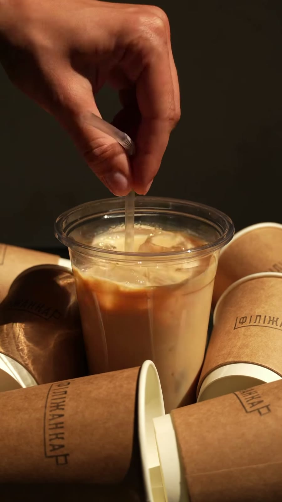
ХітЕспресо, молоко і багато льоду. Збираємо на очах у прозорому стаканчику.
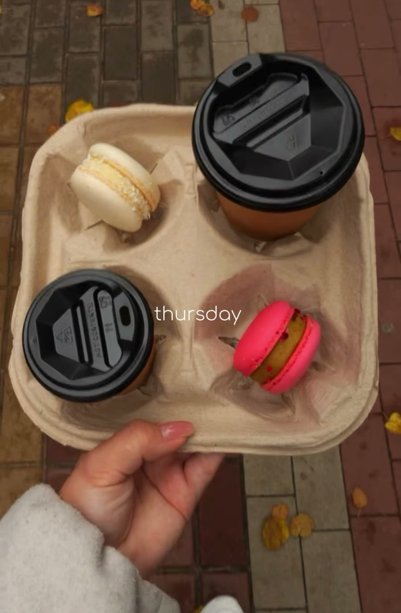
На двохБеріть на двох: дві кави і пара макарунів у зручній таці.
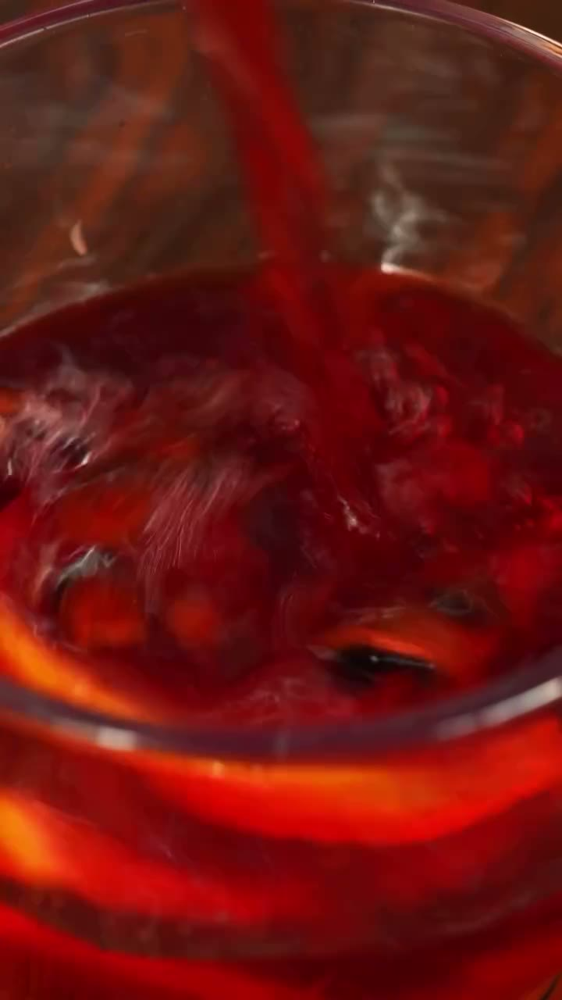
ТеплеЯгоди, апельсин і гаряча вода — зігріває з першого ковтка.
Вітрина
Вітрина щодня наповнена смачненьким — заходьте за десертом до кави у будь-який день тижня.


з фруктами96 ₴

різні смаки75 ₴

фундук-карамельна вітрині
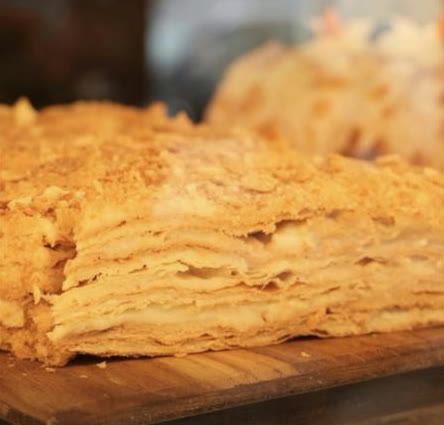
свіжий та ніжнийна вітрині

Чашки
Нові кумедні чашки вже чекають на тебе у Філіжанці. Попереджаємо: вони такі круті, що вибір буде непростим.
Ідеальний подарунок для найрідніших — забирайте разом із кавою.
Обрати в кав'ярніАтмосфера
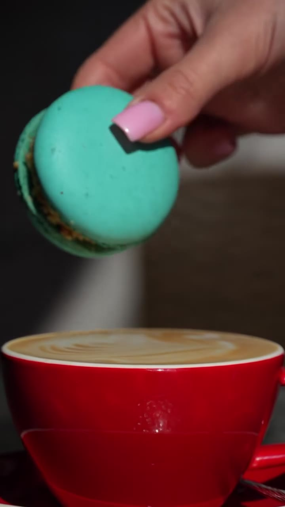

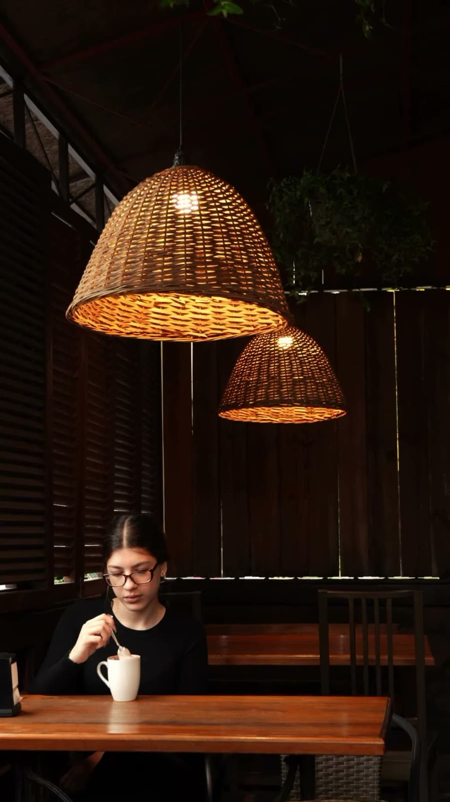

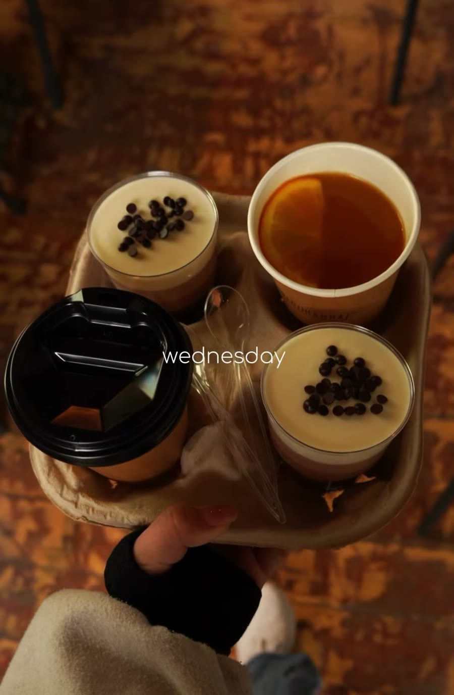
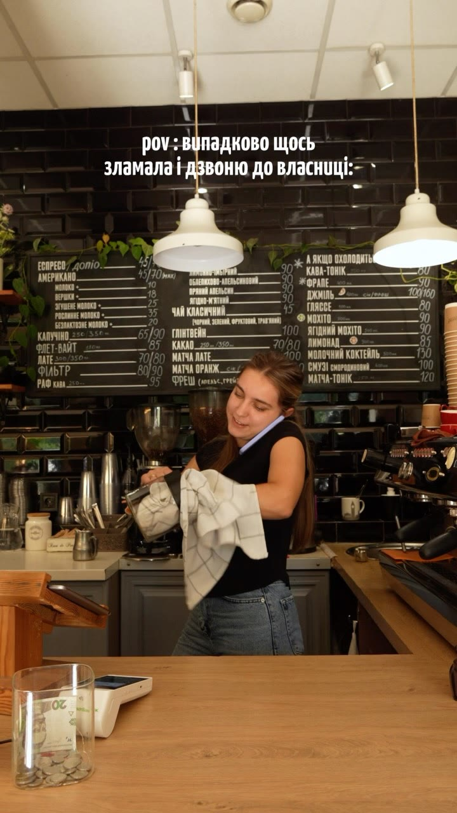
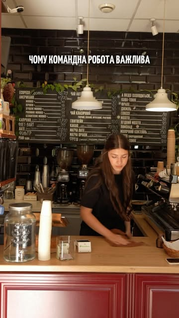

Філіжанка — це маленька чашка. А ще привід зупинитися посеред дня.
Біла Церква
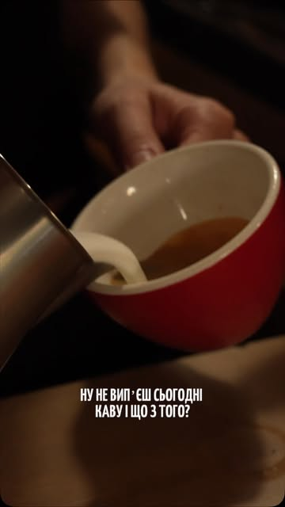

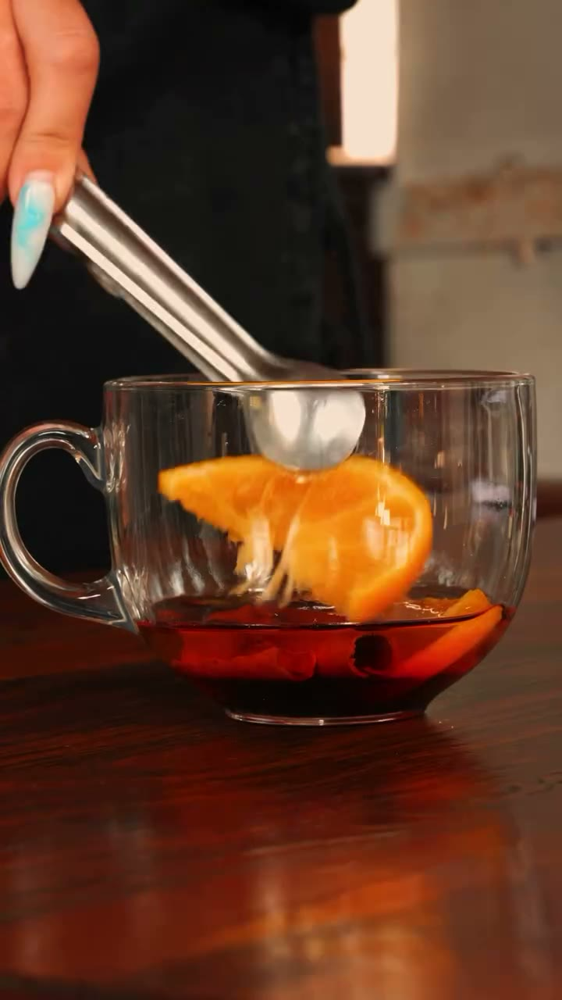


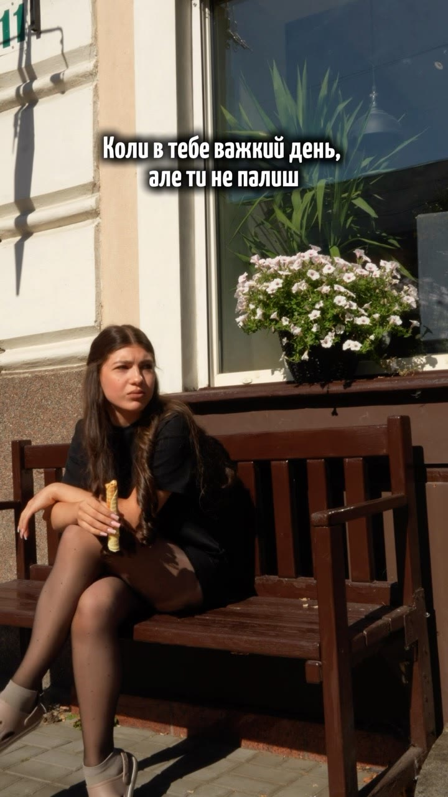
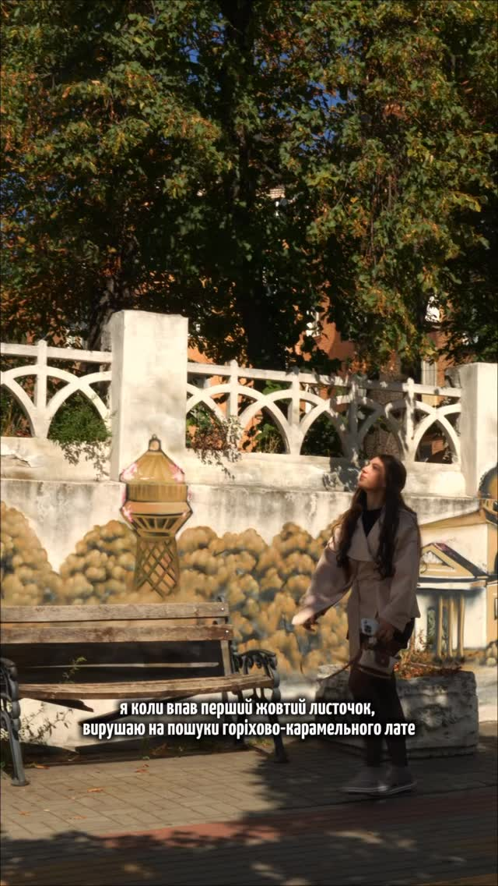
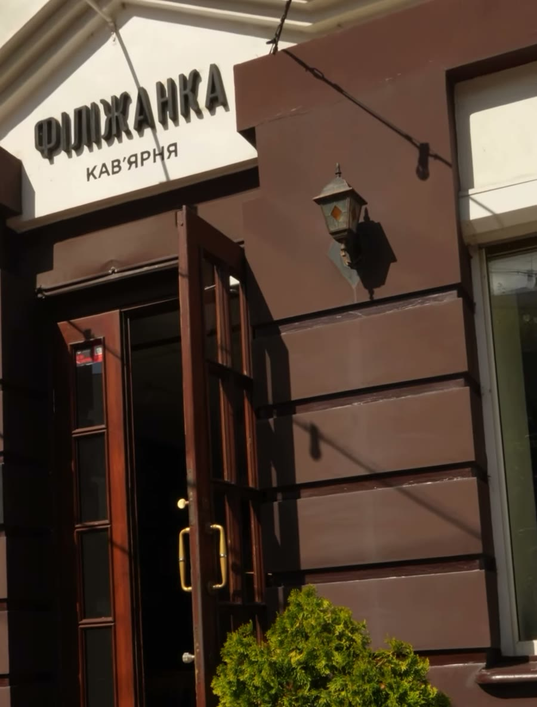
Ми тут
вул. Ярослава Мудрого, 11
центр, Біла Церква